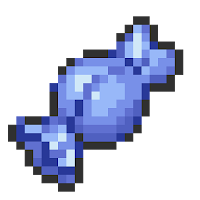

Tabla de Estadísticas Base
| PS |
Ataque |
Defensa |
At.esp. |
Def.esp. |
Velocidad |
| 108 |
130 |
95 |
80 |
85 |
102 |
| ★★★★★ |
★★★★★★ |
★★★★ |
★★★★ |
★★★★ |
★★★★★ |
Movimientos por nivel

Garchomp puede aprender los siguientes movimientos subiendo de nivel (9º gen):
- Al evolucionar: Triturar
- Nivel 1: Ataque arena
- Nivel 1: Placaje
- Nivel 1: Dragoaliento
- Nivel 1: Bucle arena
- Nivel 18: Terratemblor
- Nivel 27: Mordisco
- Nivel 34: Cuchillada
- Nivel 42: Garra dragón
- Nivel 52: Excavar
- Nivel 62: Tormenta arena
- Nivel 72: Derribo
- Nivel 82: Carga dragón
Movimientos por MT, DT, MO
Garchomp puede aprender los siguientes movimientos a través de MT, DT y MO (9º gen):
- MT001 Derribo
- MT006 Cara susto
- MT007 Protección
- MT008 Colmillo ígneo
- MT009 Colmillo rayo
- MT025 Imagen
- MT027 Golpe aéreo
- MT028 Terratemblor
- MT031 Garra metal
- MT032 Meteoros
- MT035 Disparo lodo
- MT036 Tumba rocas
- MT043 Lanzamiento
- MT044 Cola dragón
- MT047 Aguante
- MT049 Día soleado
- MT050 Danza lluvia
- MT051 Tormenta de arena
- MT055 Excavar
- MT057 Falso tortazo
- MT058 Demolición
- MT061 Garra umbría
- MT066 Golpe cuerpo
- MT070 Sonámbulo
- MT078 Garra dragón
- MT083 Puya nociva
- MT084 Pataleta
- MT085 Descanso
- MT086 Avalancha
- MT088 Danza espada
- MT090 Púas
- MT099 Cabeza de hierro
- MT101 Joya de luz
- MT103 Sustituto
- MT108 Triturar
- MT110 Hidroariete
- MT115 Pulso dragón
- MT116 Trampa rocas
- MT123 Surf
- MT125 Lanzallamas
- MT130 Refuerzo
- MT133 Tierra viva
- MT141 Llamarada
- MT149 Terremoto
- MT150 Roca afilada
- MT152 Gigaimpacto
- MT156 Enfado
- MT163 Hiperrayo
- MT169 Cometa draco
- MT171 Teraexplosión
- MT176 Bucle arena
- MT200 Ráfaga escamas
- MT204 Doble filo
- MT215 Arenas ardientes
- MT222 Vasto impacto
- MT226 Bramido dragón